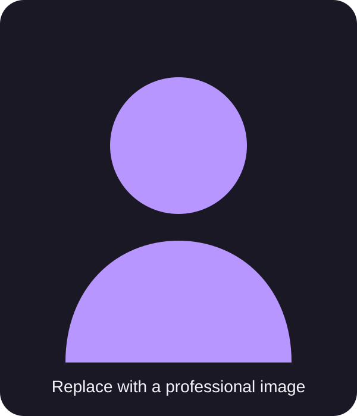

Languages
C++, GDScript, HTML, CSS
Student Developer Portfolio
I’m a Computer Science student and aspiring game developer focused on building interactive projects in C++, Godot, and Unreal Engine. I enjoy creating gameplay systems, solving technical problems, and turning ideas into working applications. My goal is to continue growing as a developer while building stronger portfolio projects in game development and software programming.

About Me
I am a Computer Science student with a strong interest in game development, software development, and technical problem-solving. I enjoy building systems from the ground up and improving them through testing, debugging, and refactoring. My background in IT and cybersecurity has helped me develop a practical approach to troubleshooting and understanding how systems work. More recently, I have been focusing on programming in C++, Godot, and Unreal Engine while creating projects that combine technical systems with interactive gameplay. I am especially interested in game mechanics, simulation systems, user experience, and designing projects that grow beyond a simple prototype into something more complete and polished.
C++, GDScript, HTML, CSS
Visual Studio, Git, GitHub, Godot, Unreal Engine
Object-oriented programming, debugging, refactoring, pointers, data structures, and file I/O
Featured Work
These projects represent some of the work I have completed while developing my programming, game development, and systems design skills.

C++ Console Application
Crypt of the Damned is a text-based C++ dungeon crawler created for my Project and Portfolio I course. The player fights through five increasingly difficult floors, earns gold, purchases upgrades, manages healing items, and attempts to defeat the Crypt Lord.
This project helped me improve my understanding of C++, object-oriented programming, pointers, input validation, refactoring, and GitHub workflow. One of my biggest challenges was balancing the game while continuing to separate responsibilities into smaller classes as the project grew.
Godot Game Project
Pactum Mortis is a roguelite blackjack game built in Godot. Instead of traditional combat, the player battles supernatural dealers through blackjack while managing health, risk, permanent upgrades, and powerful cursed cards.
This project has helped me improve my understanding of game systems, UI design, progression, balancing, and developing interconnected gameplay mechanics in Godot.
Political Simulation Game
State of Exception is a political survival and governance simulation built in Godot. The player manages a fictional country while making decisions involving laws, economics, courts, elections, diplomacy, military operations, crime, and public institutions.
Developing State of Exception has pushed me to think more deeply about systems design, simulation complexity, information architecture, UI clarity, and how many interconnected mechanics can influence one another over time.
Contact
Replace the links below with your professional profiles. Do not publish your home address, student ID, personal phone number, or other private information.